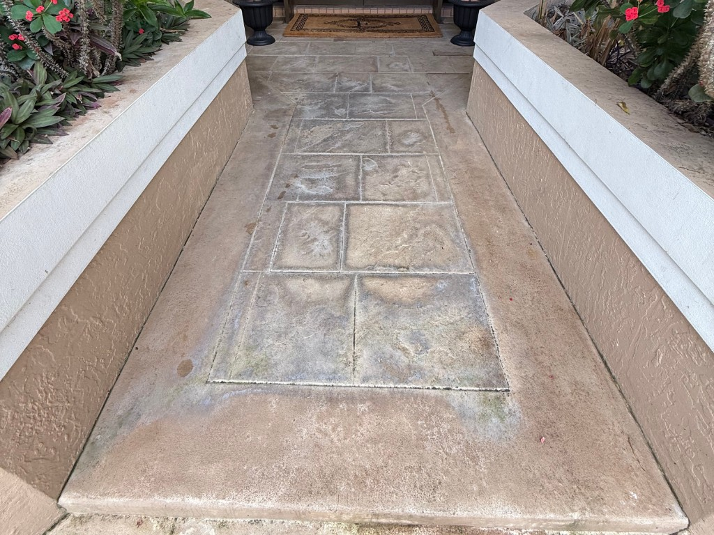

★★★★★
“I couldn’t be happier with the work Preferred Power Washing did. Jordan was professional, on time, and paid attention to every detail.”
Jesse HavenGoogle review

Exterior Painting
Florida sun, salt, and mildew punish exterior coatings. PPW washes first—pressure or soft wash, depending on the material—then paints body, trim, doors, fascia, and stamped concrete so the finish is applied to a clean, dry surface.
Prep + Coat · Homes, commercial, stamped concrete
This is the painting job we have fully documented with before-and-after photos. Additional elevation photography will be added as jobs are documented—we are not filling this page with stock “fresh paint” images.

Before AfterStamped concrete · paint restoration
We treat painting as the last step of an exterior refresh, not a cover-up. Organic staining, chalking, and dirt are removed first. Then we prime where needed and apply coatings rated for South Florida exposure.
Soft wash walls, trim, and siding so mildew is not sealed under a new coat. Pressure wash the walks and driveways that sit next to fresh paint. Scope is written before work starts: which elevations, how many coats, and whether trim, doors, or decorative concrete are included.
House body (stucco, block, and siding color). Trim and accents—fascia, doors, shutters, soffit. Stamped concrete on driveways, walkways, and patios. Commercial storefronts, offices, and HOA buildings.
Painting can be a full elevation refresh or a targeted repair after a wash. We quote both. The photos below are washed exteriors—typical prep—not additional paint jobs.
Completed PPW coating. Worn color recast so the pattern reads again instead of looking gray and tired.

Washed home elevation—typical paint prep, not a documented paint job. Whole-house or single-elevation color after a house wash.

Washed commercial elevation—typical paint prep. Offices, retail, and managed properties quoted around operating hours.

The details that finish a clean elevation. Often painted on a different cycle than the body. More paint photos will drop in here as jobs are shot.
Scraping failed film, caulking, and priming bare areas so the new coat does not fail at the same spots. Wash or soft wash before coating when the surface needs it; mask and set a clean work area; coat count and products listed in the quote; body, trim, doors, or stamped concrete as scoped; walkthrough of completed elevations.
Wash, paint, and glass in one plan so crews are not painting around dirty walks or streaked windows.
Ask about painting alone or bundled with a wash.
Professional work, clear communication, and results customers are happy to recommend.
“I couldn’t be happier with the work Preferred Power Washing did. Jordan was professional, on time, and paid attention to every detail.”
“Jordan did an amazing job by bringing my property back to life! I completely trust him recleaning my home next time. Highly recommend!”
“We were very happy with the results. Jordan communicated well, was on time, and fair priced. We will definitely use them again.”
Ask about painting alone or bundled with a wash.